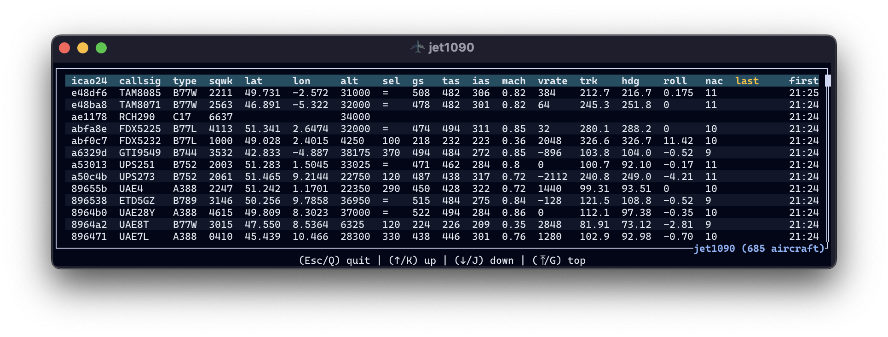

Serving real-time decoded data¶
Output in the terminal¶
- The
--verboseoption dumps JSON entries to the terminal as messages are received. - The
--interactiveoption is similar to thedump1090 --interactiveand provides a table view of the visible aircraft.

Both options are incompatible and --interactive has the priority.
In the table view, aircraft can be sorted by:
| key | |
|---|---|
. |
number of messages (count), default |
A |
altitude |
C |
callsign |
F |
first timestamp |
L |
last timestamp |
V |
vertical rate |
- |
ascending/descending order |
Output as a JSON file¶
The -o or --output option enables the dumping of decoded messages to a file in the JSON line format.
That format is easily accessible from several libraries across programming languages:
import pandas as pd
df = pd.read_json("output.jsonl", lines=True)
import polars as pl
df = pl.read_ndjson("output.jsonl")
You will need the lazy and ndjson (new line delimited JSON) features:
[dependencies]
polars = { version = "0.34", features = ["lazy", "ndjson"] }
use polars::prelude::*;
let df = LazyFrame::scan_ndjson("output.jsonl", ScanArgsNdJson::default())?
.collect()?;
data = fetch("output.jsonl")
.then(response => response.text())
.then(text => text.split("\n").filter(line => line.trim() !== "").map(JSON.parse));
library(ndjson)
df <- ndjson::stream_in("output.jsonl")
REST API¶
If a --serve-port option is set, a REST API is set on 0.0.0.0 on the port of your choice.
The following endpoint are provided:
/: returns a list of all visibleicao24identifiers/all: returns a list of all state vectors (the last valid field for each aircraft)/track?icao24=xxx: returns a list of all received messages for a given aircraft.
Warning
By default, all the history remains accessible until the program exits but this behaviour can drain your RAM memory quickly if you see many aircraft. You can use the --history-expire parameter to limit the history to a number of minutes before the current time.
You can also completely deactivate the storing of messages with the --history-expire 0 option.
WebSocket¶
(not yet supported)
Redis pub/sub¶
If the --redis-url is set, all messages are sent to the Redis pub/sub instance.
The default topic is jet1090 but it can be overriden with the --redis-topic option.
You may run a Redis server as a Docker or podman instance:
docker run -d --rm --name redis -p 6379:6379 -p 8001:8001 redis/redis-stack:latest
podman run -d --rm --name redis -p 6379:6379 -p 8001:8001 redis/redis-stack:latest
You may check messages are incoming through the web interface on http://localhost:8001 or with a redis CLI client, for instance:
$ uvx iredis
Installed 11 packages in 51ms
iredis 1.15.0 (Python 3.13.1)
redis-server 7.4.1
Home: https://iredis.xbin.io/
Issues: https://github.com/laixintao/iredis/issues
127.0.0.1:6379> psubscribe jet1090
# messages should be incoming here